What this is
A portable governance tool for de-identifying research datasets before release. Everything runs locally in bundled R over pre-installed packages; heavy free-text detection runs out-of-process in a bundled Python (ONNX) — no installation and no network calls, ever. All project state lives in one self-contained folder that travels with the data drive, so a job can be unplugged and resumed on another machine.
Removes the 15 identifiers
Names, National ID (NRIC/FIN/temp IC/passport), MRN, case/visit, address, postal code, phone, fax, email, dates of birth/death, device serials, biometrics, photos, and other unique codes — each with an editable per-column action.
Finds misplaced PII
Column profiling flags a validated NRIC typed into a date or serial-number column, and free-text detectors (rules + the Privacy Filter) catch identifiers buried in clinical notes.
Proves what it did
Every step is written to a hash-chained audit log with a SHA-256 manifest; a de-identifier and a reviewer sign the bundle, and a signed PDF certificate is emitted.
How to run it
Three ways in, depending on whether you have the packaged bundle, the source repo, or a folder of files to process headlessly.
ADeployed bundle — unzip and double-click
On the locked-down target, no install and no PowerShell required:
- Copy
sds_pf.ziptoDownloadsand Extract All… (File Explorer). Keep the folder short —C:\Users\<you>\Downloads\sds. - Double-click
run.bat— it locates the bundled R and opens the app athttp://127.0.0.1in your browser. - First, verify the bundle is intact and MAX_PATH-safe: double-click
tools\verify.batand expectVERIFY PASS.
The bundle carries a relocatable R runtime, the bundled Python + ONNX Privacy Filter model, sample data, and the docs. It never reaches the network.
BFrom source (developer)
With R 4.5.x installed and the app's package dependencies present:
# interactive app on port 7788 Rscript -e "shiny::runApp('app', port=7788)" # regenerate the synthetic fixtures Rscript samples/make_sample.R Rscript samples/make_xml_samples.R
CHeadless batch
Process a whole folder into one project — same engine as the UI:
run_batch.bat --project <projectDir> \
--inputs <folder> [--recursive] \
[--workers 4] [--out-format csv] \
[--actor NAME] [--force] [--strict]
# optional feedback tuning (Phase 9)
[--gold gold.csv] [--apply-tunings --actor NAME]
Roles. Pick De-identifier or Reviewer in the sidebar. Running the transform requires the De-identifier role; approving output and countersigning requires the Reviewer role — that is the two-person segregation of duties.
The synthetic dataset
Every screenshot below is a live run over the shipped synthetic data (samples/make_sample.R) — no real patient data. It is 40 rows of invented patients with realistic Singapore shapes, and it deliberately plants the hard cases:
The XML/ECG run uses samples/make_xml_samples.R, which emits one file per supported profile (Philips SierraECG, GE MUSE, HL7 CDA, FHIR, generic), each carrying a recognisable waveform payload so you can confirm the signal survives de-identification.
Feature run-through
The eleven workflow tabs plus the auto-tuning tab, in order, each shown against the synthetic dataset.
Project — create a portable job folder
Create or open a self-contained project folder on the data drive, and choose the key scope.
What you're seeing
A new project DemoStudy created at C:/sds_guide/DemoStudy with a project-specific key. The right panel documents what the folder holds — settings, inputs/outputs, checkpoints, the encrypted crosswalk, the SHA-256 manifest, the audit log, signatures and the certificate.
How it works
Project key isolates a study; global key lets the same person link across studies. The whole folder is portable: unplug the drive and resume on another machine. Re-identification is possible only with the key via the AEAD crosswalk.
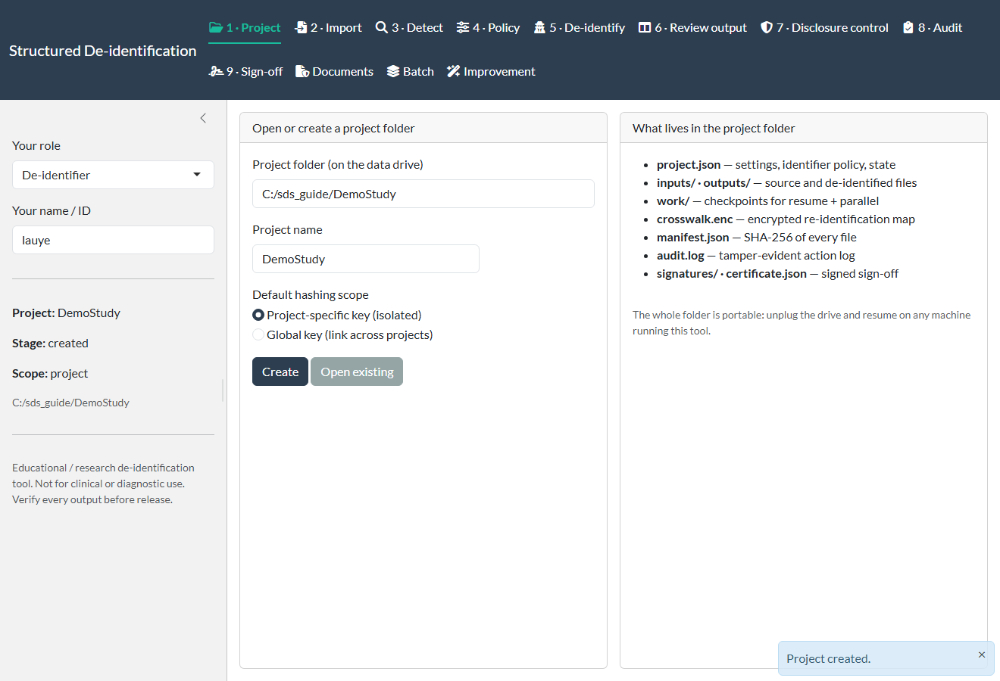
Import — load and register a table
Load a CSV/XLSX; the file is checksummed and registered into the project.
What you're seeing
The synthetic sample_patients.csv loaded — 40 rows × 12 columns, its SHA-256 shown, with a live preview of the 15-identifier columns (name, NRIC, case no, MRN, DOB, phone, email…).
How it works
Import copies the source into inputs/, records its SHA-256 in the manifest, and writes an import entry to the audit chain — so the exact bytes that were processed are provable later.
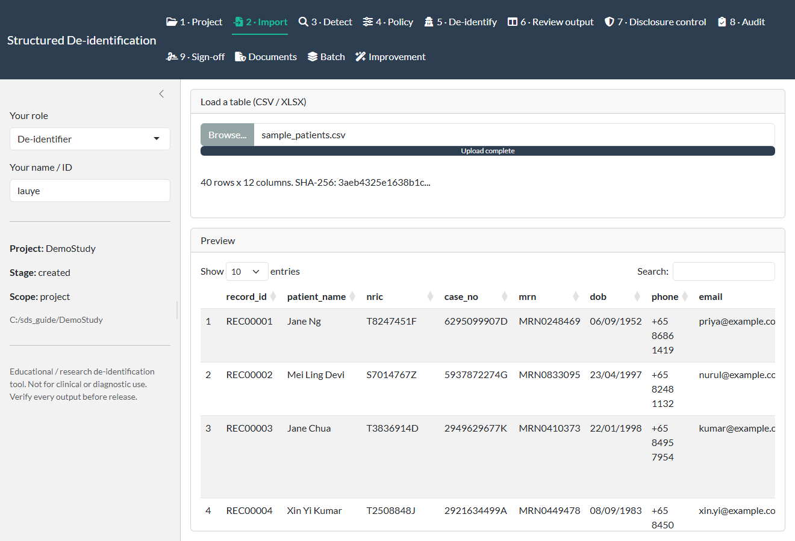
Detect — PII, misplaced values & free text
Layered, offline detection: deterministic validators, column profiling, and the free-text Privacy Filter.
What you're seeing
The scanner flags the misplaced temp ICs in the nric column as an unusual shape, and surfaces free-text PII — a phone number found inside notes (row 3). The Privacy Filter is enabled for free-text scanning.
How it works
Rules validate NRIC/FIN checksums, phone, email, dates and cards; profiling compares each cell's shape and content type against its column's majority to catch misplaced identifiers; the Privacy Filter (an ONNX token classifier) runs out-of-process for names/addresses in prose.
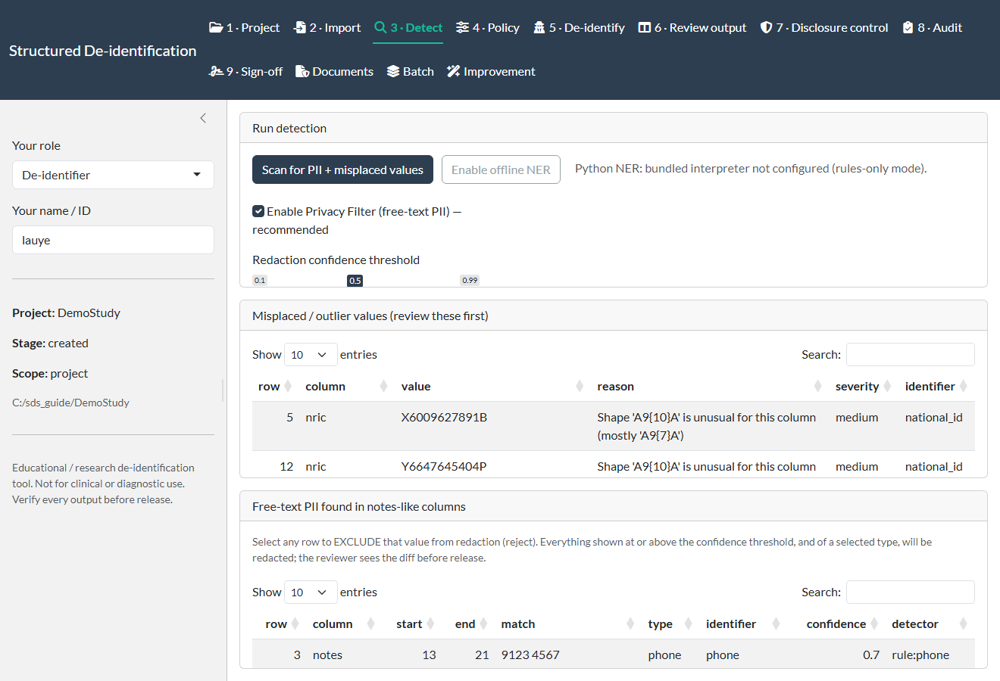
Policy — per-column actions
Map each column to an identifier and an action; auto-suggest proposes a sensible default you can override.
What you're seeing
Auto-suggest has mapped the columns from their names and content (each row shows its detected shape): record_id→keep, patient_name→pseudonymize, nric→National ID, and so on. The policy is saved to project.json.
How it works
Actions are pseudonymize (keyed token), FPE (keep the ID's shape), generalize (year, age band, region, postal mask, or interval-preserving date-shift), redact, and free-text targeted redaction. FPE is opt-in per field; dates default to year-only.
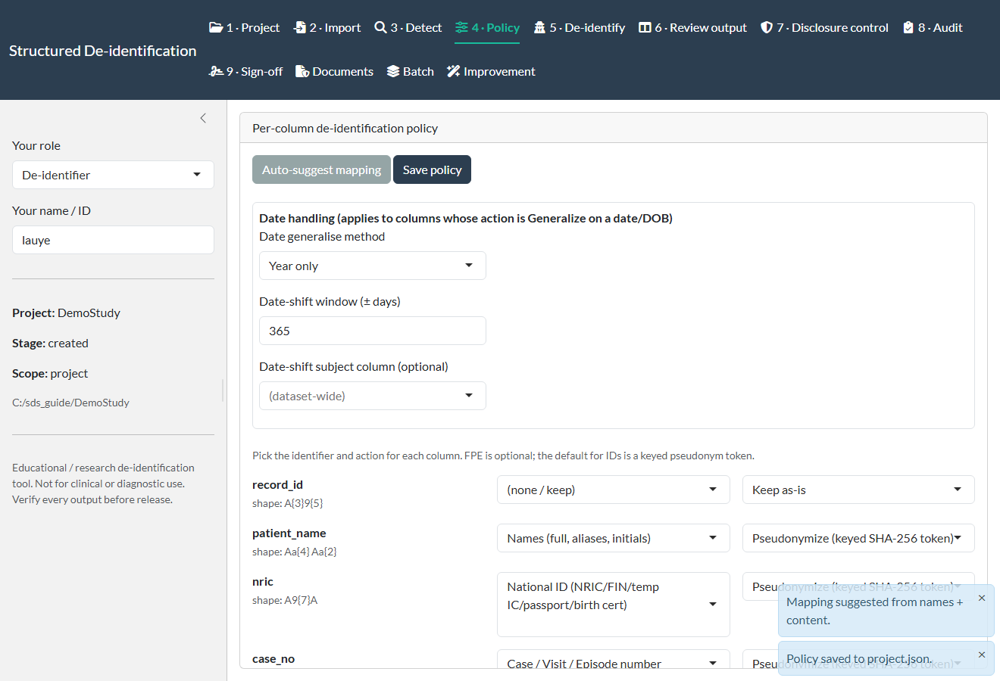
De-identify — apply the policy
Transform the table in checkpointed chunks; survives interruption and drive moves; writes the reversible crosswalk.
What you're seeing
The run report: 12 columns processed, 239 reversible crosswalk rows, and a per-column tally (pseudonymize/generalize/redact, rows changed). Re-running resumes from checkpoints rather than recomputing.
How it works
Large files are sliced into chunks under work/; each chunk is a checkpoint, so a killed run — or the drive moved to another machine — resumes where it stopped. Optional parallel workers. Output, encrypted crosswalk, manifest and audit entry are all written.
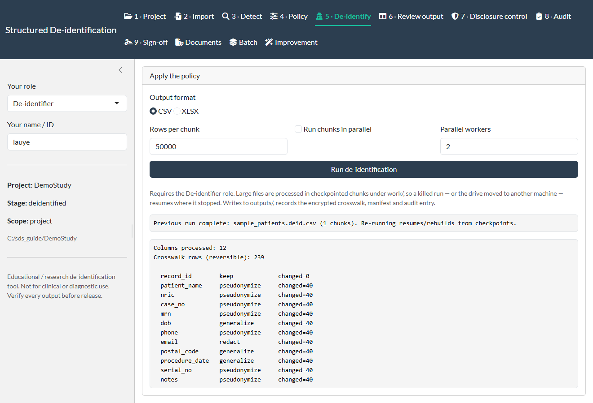
Review — original vs de-identified
A reviewer inspects the transform side-by-side and either approves or returns the job.
What you're seeing
The patient_name column before and after: Jane Ng → NAM-581e9f…, each real name replaced by a stable keyed token. Pick any column and page through all rows.
How it works
Review reads the finished output through a bounded reader (it never loads a huge file whole). Approve / Return to de-identifier is gated to the Reviewer role and recorded in the audit chain.
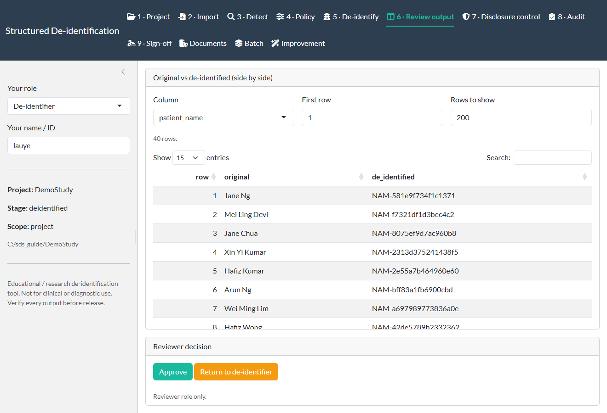
Disclosure control — measure & reduce risk
Optional statistical disclosure control with a hard export gate on your thresholds.
What you're seeing
Quasi-identifiers dob, postal_code, procedure_date selected, target k = 5. A suppression preview shows the effect before you commit: k-anonymity before k=1 → after k=40, uniques 40 → 0.
How it works
Measures: k-anonymity, l-diversity, sample-uniqueness (SUDA-lite), individual risk (sdcMicro), and DCR linkage risk. Transforms (all opt-in): suppression, recode, top/bottom coding, microaggregation, PRAM, noise (Gaussian / DP-style Laplace), and marginal synthesis. Export can be blocked below a k / max-risk threshold.
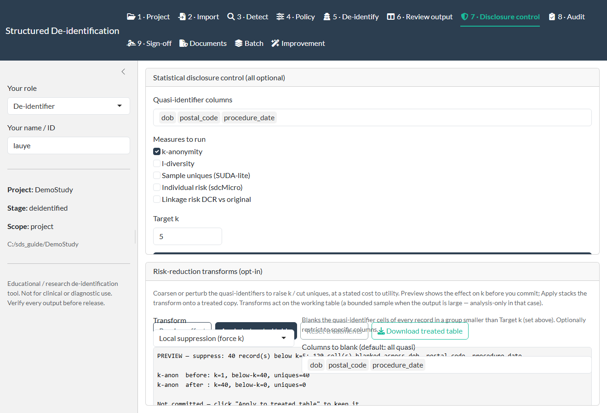
Audit — tamper-evident trail
Every action is appended to a hash-chained log; the manifest fingerprints every file.
What you're seeing
Chain OK (6 entries) — project_create, import (with the input SHA), detect (counts of outliers/free-text, PF on). The file manifest lists the input and the de-identified output, each with its SHA-256.
How it works
Each entry stores the previous entry's hash, so any edit to a past line breaks verification. Verify chain integrity re-walks the chain and reports OK or the first broken link.
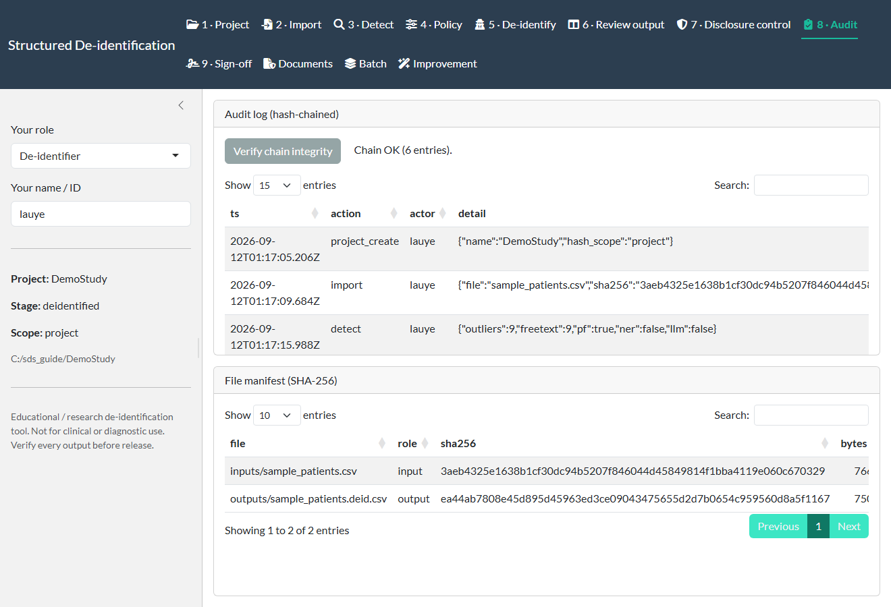
Sign-off — signatures, handoff & certificate
Each person signs their stage; the signed bundle passes between machines; a certificate is emitted.
What you're seeing
The de-identifier has signed the deidentified stage, and a de-identification certificate has been generated (project, stage, policy columns, manifest SHA, audit ok: true). The human-readable PDF is ready to download.
How it works
Signing uses a per-user ed25519 key; the public key travels in the bundle so the other machine can verify it (signed handoff). The certificate + full report render offline in pure R — no pandoc, no LaTeX, no network.
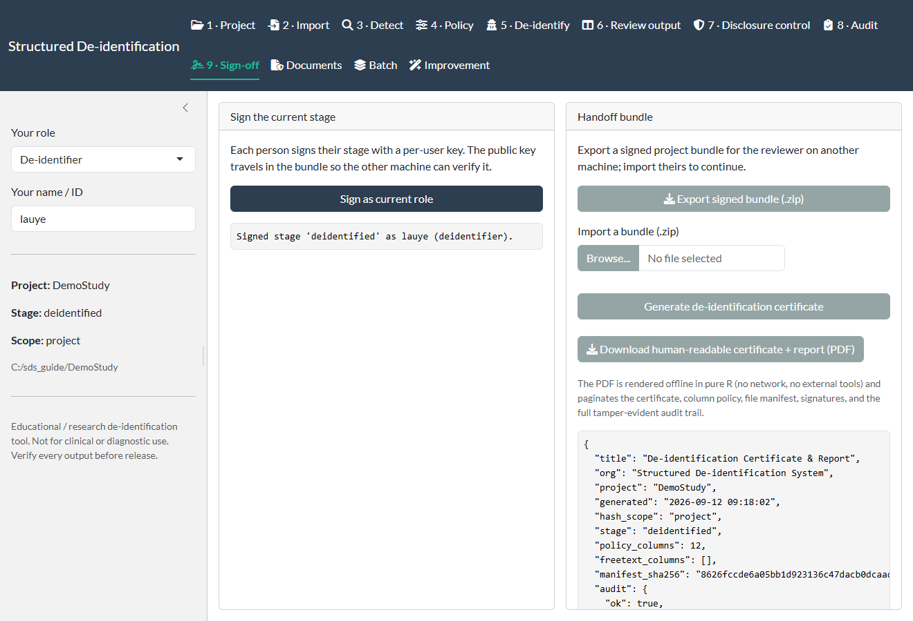
Documents — PDF & XML/ECG redaction
True redaction for PDFs and header-PHI scrubbing for XML, including vendor ECG — with the waveform preserved.
What you're seeing
A Philips SierraECG file scrubbed: the profile is auto-detected, header PHI (patient name, acquirer) is pseudonymized/redacted per the findings table, the output is written, and a “waveform preserved” badge confirms the signal is untouched.
How it works
PDFs are rasterized, the PII regions painted, and the file flattened to image-only so the underlying text layer is removed, not just covered (a re-OCR check confirms it). XML is tree-walked for generic, HL7 CDA/FHIR, and Philips/GE ECG profiles, scrubbing demographic/test headers while leaving the waveform bytes intact.
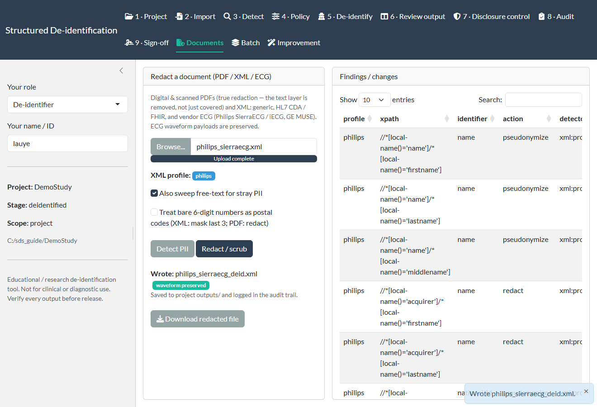
Batch — many files at once
Run a whole folder through the same pipelines into one project.
What you're seeing
A folder of mixed inputs processed: two ECG XMLs scrubbed (xml_scrub), and the CSV correctly skipped because its output already exists — the run is idempotent.
How it works
Each file is routed by type (CSV/XLSX → table engine, PDF → redaction, XML/ECG → scrub) into the project's outputs, merged crosswalk, manifest and audit. It is fail-soft (a bad file is logged, the run continues), idempotent (--force to redo), and parallel.
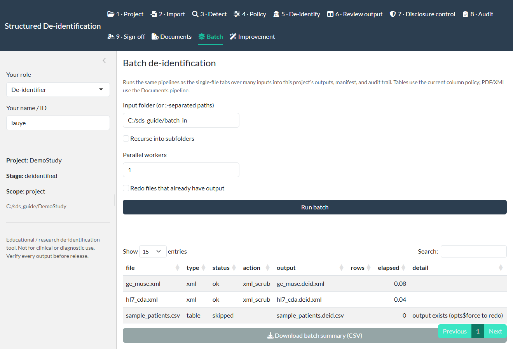
Improvement — feedback-driven tuning
Learn from identifiers missed in earlier runs, review a suggested fix, and apply it — versioned and reversible.
What you're seeing
Mark a missed value or ingest a ground-truth file to measure recall; the tool diagnoses why each miss happened and proposes a fix — a threshold change, a watchlist literal, per-column force-detectors, or a learned regex.
How it works
A reviewer approves before anything changes; applying is versioned and audited (and revertible). Captured raw values are AEAD-encrypted and project-scoped; the optional cross-project register is aggregate-only and never stores a literal. Both cross-project options default off.
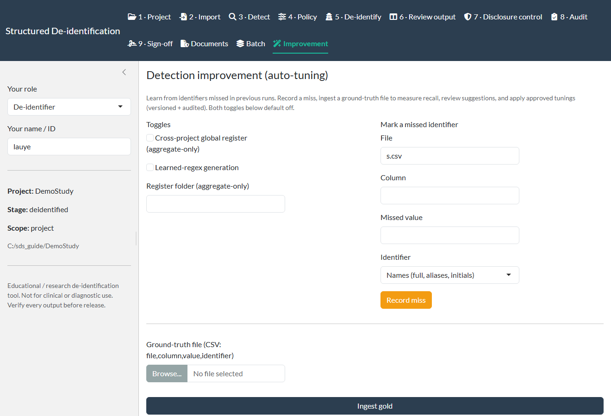
Under the hood
The tabs above are a thin layer over a pure-R core; the cryptography and detection are the same primitives whether you use the UI, the batch CLI, or call the functions directly.
Cryptography
Detection & engine
Verification
The repo ships a headless regression suite that exercises every feature above on the synthetic data.
# from the repo root — 4 suites, 121 checks
Rscript tools/smoke/run_all.R
It covers crypto, detectors, profiling/misplaced-PII, all transforms, date-shift, the audit chain, SDC metrics + gate + transforms, XML/ECG scrub across all five profiles (waveform preserved), PDF true redaction, the checkpointed pipeline with resume + parallel, signed handoff, the batch runner, and the Privacy Filter. On the deployed bundle, tools\verify.bat runs a self-check and prints VERIFY PASS.
Not for clinical or diagnostic use. This is an educational / research governance tool. The data controller remains responsible for confirming the adequacy of de-identification before any release, under PDPA, HIPAA Safe Harbor, and SingHealth/IRB requirements. Never load real patient data into a shared or untrusted environment.